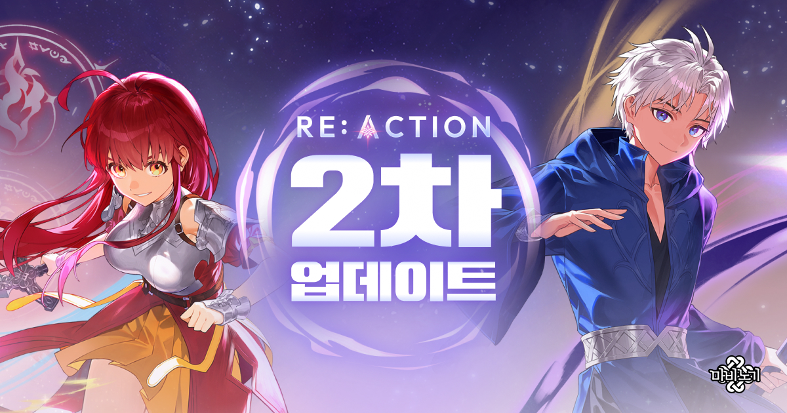
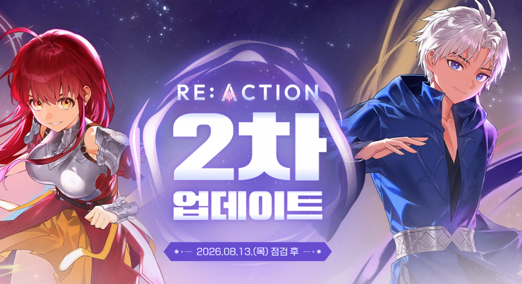
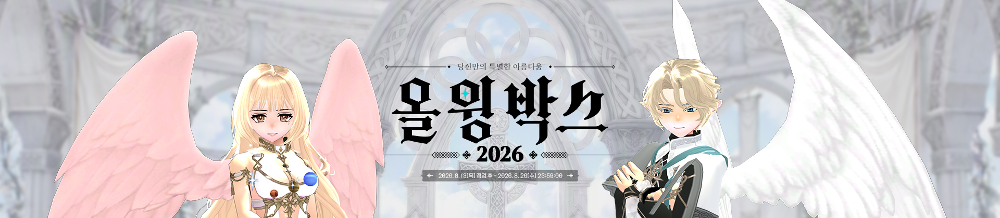
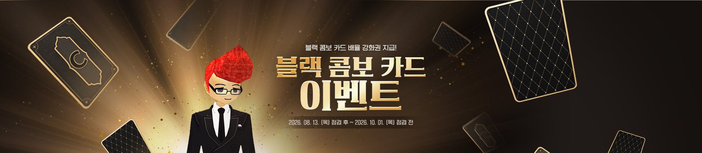

마비노기 RE:ACTION 2차 업데이트 오늘 적용ㆍ아르카나 각성 50레벨, 8월 이벤트 총정리 PC온라인게임추천
※ 해당 게임에는 확률형 아이템이 포함되어 있습니다.
오늘 낮에 마비노기 홈페이지에 들어갔다가 알림이 하나 떠 있길래 확인해 봤는데요, 예고만 됐던 RE:ACTION 2차 업데이트가 실제로 적용됐더라고요. 지난번에 마비노기 RE:ACTION 2차 업데이트 지금까지 나온 내용이랑 이터니티 알파 테스트 신청 방법까지 정리해 드린 지 일주일 정도 지났는데, 그새 정식 적용일이 확정되고 오늘(8월 13일) 오후 1시 반부터 실제로 반영됐습니다.
공교롭게도 같은 날 여름 이벤트도 여러 개 같이 시작돼서, 오늘은 RE:ACTION 2차 업데이트가 실제로 어떻게 반영됐는지랑 8월 이벤트를 한 번에 정리해 드리겠습니다. 다만 정식 서버에 적용된 지 얼마 안 된 시점이라, 세부 수치나 게임 안에서 직접 비교해야 정확한 부분은 확인이 더 필요하다는 점 미리 말씀드립니다.

이미지 출처: 마비노기 RE:ACTION 2차 업데이트 페이지 · 네이버 본문에는 이 이미지를 내려받아 직접 업로드해 주세요.
2차 업데이트 공식 키비주얼입니다. 오늘 오후 1시 반부터 실제로 적용됐습니다.
1. RE:ACTION 2차 업데이트, 오늘 오후 1시 반부터 실제로 적용됐습니다
RE:ACTION 2차 업데이트는 2026년 8월 13일 오후 1시 30분부터 마비노기 정식 서버에 적용됐습니다. 오늘 오후 1시 57분에 뜬 공식 공지 기준으로, 이번 2차 업데이트에서 실제로 반영된 내용은 이렇습니다.
- 아르카나 각성 레벨 상한이 기존 30레벨에서 50레벨로 확장됐습니다.
- 각성 레벨 31부터 아르카나별 전용 각성 스킬을 순서대로 습득할 수 있게 됐습니다.
- 아르카나별 신규 오검 워드 조합 효과가 추가됐습니다.
- 에르그 금화 성장이 개선돼서, 별도 재료 없이 지정된 금화만 모아도 경험치가 쌓이고 최대 레벨이 열리는 구조가 됐습니다.

이미지 출처: [공지] RE:ACTION 2차 업데이트 안내 · 네이버 본문에는 이 이미지를 내려받아 직접 업로드해 주세요.
아르카나 각성 50레벨 확장 등, 오늘 실제로 적용된 내용을 담은 공지 배너입니다.
패치노트를 보면 이 각성 스킬들은 확정적으로 크리티컬이 발동되는 효과로 소개돼 있어서, 각성 레벨 상한만 늘어난 게 아니라 실제 전투 체감 자체가 달라질 걸로 보이네요. 개발자 노트를 조금 더 들여다보면, 아르카나마다 링크 효과나 최대 대미지, 버프 스킬 구성이 전부 달라서 최종 대미지도 아르카나별로 따로 조정했다고 설명하고 있습니다. 그러니까 같은 50레벨이라도 어떤 아르카나를 쓰느냐에 따라 체감이 꽤 다를 수 있다는 뜻인데요, 세부 스킬 이름이나 정확한 수치는 아직 게임 안에서 하나씩 확인해야 할 부분이라, 오늘은 큰 줄기만 정리하고 가겠습니다.
이번 전체 패치노트에는 전투 콘텐츠 말고 편의성 쪽 변경도 하나 눈에 띄었어요. 장비창에서 지금 장비가 개조ㆍ인챈트ㆍ세공 중 어느 단계까지 진행됐는지 한눈에 보여주는 버튼이 새롭게 추가됐다고 하는데요, 예전에는 이 정보를 확인하려면 메뉴를 몇 단계씩 들어가야 했던 걸로 기억하는데 이제 버튼 하나로 바로 확인할 수 있다면 강화 루트를 짤 때 훨씬 수월해질 것 같습니다.
2. 밀레시안 장비 6주 완성 이벤트, 오늘 시작해도 기본 풀세트는 챙길 수 있습니다
피버시즌 안내 기준으로는, 오늘부터 시작해도 무기ㆍ방어구ㆍ액세서리 기본 풀세트까지는 챙길 수 있는 구조입니다. 정확히는 피버시즌에서 진행 중인 6주 장비 완성 이벤트(흔히 '밀레시안 장비 6주 완성 이벤트'로 불리는)인데요, 이번 RE:ACTION 여름 캠페인인 피버시즌(FEVER SEASON) 안에 포함된 하위 이벤트입니다. 피버시즌은 7월 초부터 이어지고 있는 마비노기 여름 시즌 캠페인 이름인데요, RE:ACTION 1차ㆍ2차 업데이트가 전부 이 피버시즌 안에서 순서대로 풀리는 구조라, 오늘 8월 이벤트를 정리하면서 꼭 한 번 짚고 넘어가야 할 이름입니다.
이름만 보면 6주를 다 채워야 할 것 같지만, 오늘이 2차 업데이트 시작일이다 보니 지금부터 6주를 꽉 채워 참여하는 건 현실적으로 불가능합니다. 그래도 뒤늦게 시작하는 분들이 손해 보는 구조는 아니라서 참여할 이유는 충분한데요, 인챈트나 세공까지 붙은 완전히 강화된 장비까지 주는 건 아니라는 점은 따로 알아두시면 좋겠습니다. 세부 조건은 피버시즌 페이지에서 한 번 더 확인해 보시는 게 좋습니다.
이벤트로 받은 장비를 원래 쓰던 장비로 옮길 수 있는 계승 할인권도 같이 제공되는데요, 마침 오늘(8월 13일) 오후 3시 12분부터 장비 계승 시스템 자체가 오류로 임시 제한된 상태네요. 넥슨 쪽에서 원인을 확인 중이라고 밝혔고, 이 글을 쓰는 시점까지 정상화 공지는 따로 없었습니다. 계승은 정상화 공지가 뜬 뒤에 시도하시는 게 안전합니다.
이미지 출처: 마비노기 피버시즌 페이지 · 네이버 본문에는 이 이미지를 내려받아 직접 업로드해 주세요.
밀레시안 장비 6주 완성 이벤트가 속한 피버시즌 공식 키비주얼입니다.
3. 오늘 같이 시작한 8월 이벤트, 혼동 없이 구분해서 정리
오늘(8월 13일) 마비노기에서는 올 윙 박스 2026ㆍ2026 광복절 이벤트ㆍ블랙 콤보 카드 이벤트까지 세 가지 이벤트가 한꺼번에 시작됐습니다. 이름이 비슷비슷해서 헷갈릴 수 있어서, 표로 먼저 정리해 드릴게요.
| 이벤트명 | 기간 | 핵심 |
|---|---|---|
| 올 윙 박스 2026 | 8.13 13:30 ~ 8.26 23:59 | 아이템샵 확률형 코스튬 박스 |
| 2026 광복절 이벤트 | 8.13 13:30 ~ 8.20(목) 점검 전 | 빛을 되찾은 날, 단기 참여형 보상 |
| 블랙 콤보 카드 이벤트 | 8.13 13:30 ~ 10.1(목) 점검 전 | 배율 강화권 지급 |
여기서 하나 짚고 넘어가면, 표에 적힌 '점검 전'은 그날 오전 정기점검 때 종료된다는 뜻이에요. 마지막 날 저녁에 들어가면 이미 끝나 있을 수 있으니, 하루 정도 앞당겨서 챙겨두시는 게 안전합니다.
올 윙 박스 2026은 부제가 '당신만의 특별한 아름다움'인 아이템샵 이벤트입니다. 8월 26일 밤 11시 59분까지 진행되고, 확률형 코스튬 박스라 확률 정보는 구매 전에 꼭 확인해 보시는 게 좋아요.

이미지 출처: [공지] 올 윙 박스 2026 · 네이버 본문에는 이 이미지를 내려받아 직접 업로드해 주세요.
'당신만의 특별한 아름다움', 올 윙 박스 2026 배너입니다.
2026 광복절 이벤트는 정식 명칭이 '빛을 되찾은 날, 2026 광복절 이벤트'인데요, 다른 이벤트보다 기간이 훨씬 짧습니다. 8월 13일 점검 후부터 시작해서 8월 20일(목) 점검 전까지로 짧게 진행되니, 다른 이벤트처럼 여유 있게 미뤄뒀다간 놓칠 수 있어요.
이미지 출처: [공지] 2026 광복절 이벤트 · 네이버 본문에는 이 이미지를 내려받아 직접 업로드해 주세요.
8월 20일(목) 점검 전까지, 짧게 진행되는 광복절 이벤트 배너입니다.
블랙 콤보 카드 이벤트는 블랙 콤보 카드 배율 강화권을 챙길 수 있는 이벤트인데요. 10월 1일(목) 점검 전까지로 진행 기간이 가장 길어서, 위 두 이벤트보다는 상대적으로 여유 있게 챙기셔도 되고요.

이미지 출처: [공지] 블랙 콤보 카드 이벤트 · 네이버 본문에는 이 이미지를 내려받아 직접 업로드해 주세요.
가장 오래 진행되는(~10.1 점검 전) 블랙 콤보 카드 이벤트 배너입니다.
자주 묻는 질문
Q. 장비 계승 제한은 언제 풀리나요?
A. 정확한 복구 시점은 이 글을 쓰는 시점까지 따로 공지되지 않았습니다. 공식 공지가 올라오는 대로 다시 확인해서 업데이트해 드리겠습니다.
Q. 지난번에 신청 안내해 드린 이터니티 알파 테스트, 이제 신청 끝났나요?
A. 네, 신청 기간이 8월 12일 밤 11시 59분까지였어서 이미 마감됐습니다. 당첨자 발표는 8월 25일 낮 12시 예정이니, 신청하셨던 분들은 그때 다시 확인하시면 됩니다. 신청 안내 자체는 지난주에 별도 공지로 먼저 올라왔던 내용이라, 이번에 처음 보신 분들은 참고한 곳에 링크해 둔 원문 공지를 한 번 살펴보고 오시는 것도 좋을 것 같아요.
▶ 같이 보면 좋은 글
· 마비노기 RE:ACTION 2차 업데이트 지금까지 나온 내용, 이터니티 알파테스트 신청방법까지 (아르카나 각성 50레벨) PC온라인게임추천 (네이버에서 해당 글 링크를 직접 넣어 주세요)
· 마비노기 RE:ACTION 사전등록 보상 정리, 22주년 판타지 파티 쇼케이스 총정리 (네이버에서 해당 글 링크를 직접 넣어 주세요)
참고한 곳
· [공지] RE:ACTION 2차 업데이트 안내
· [개발자노트] RE:ACTION 2차 업데이트
· [공지] 8/13(목) 정식 서버 패치 작업 변경점 안내
· [공지] 장비 계승 시스템 임시 제한 안내
· [공지] 올 윙 박스 2026
· [공지] 2026 광복절 이벤트
· [공지] 블랙 콤보 카드 이벤트
· [공지] 이터니티 알파테스트 신청 안내
· 마비노기 피버시즌(FEVER SEASON) 페이지
· 마비노기 RE:ACTION 2차 업데이트 페이지
해당 게임에는 확률형 아이템이 포함되어 있습니다.